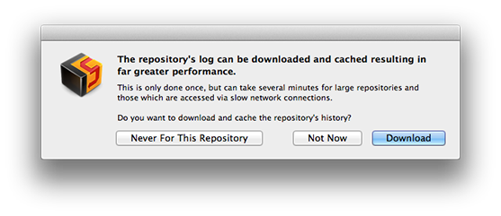

The good thing about historical data is that it doesn't change and this makes it an excellent candidate for caching.
Cornerstone can download and cache your repository's log to greatly speed up browsing and querying activities.
However, this behavior may not always be appropriate. For example, downloading huge repositories (e.g. the Apache.org repository has over 500,000 revisions) may not be feasible. Or you may not intend to repeatedly browse a repository's history and want to avoid the overhead of caching the log on your Mac's hard drive.
For whatever reason, you may not want Cornerstone to cache your repository's log.
Cornerstone notices when a repository's log is accessed for the first time and asks how the log should be accessed:

All queries will be made directly against the repository and no information is cached. This is appropriate for very large or infrequently accessed repositories.
This selection is permanent.
Subsequent queries during the current application session will be made directory against the repository. No Information will be cached. This is appropriate when you might want to download and cache the repository's history in the future but do not want to do so at the current time.
This selection is temporary. You will be asked again for this repository next time the application is started.
The history is downloaded and cached in its entirety. This may take some time for large repositories, depending on server load and network connection speeds.
Future history access will only download the latest log entries, resulting in the fastest browsing and query performance at the expense of the diskspace required to cache the history data.
On average, each revision will take between 1KB and 2.5KB of disk space, depending on the verbosity of the log messages and change set size (i.e. number of files committed with each revision).
Small repositories (up to 5,000 revisions) will generally require less than 10MB of space.
Larger repositories with tens of thousands of revisions can require significant disk space. For example, the WebKit repository (currently with over 40,000 revisions) requires slightly over 100MB of space.